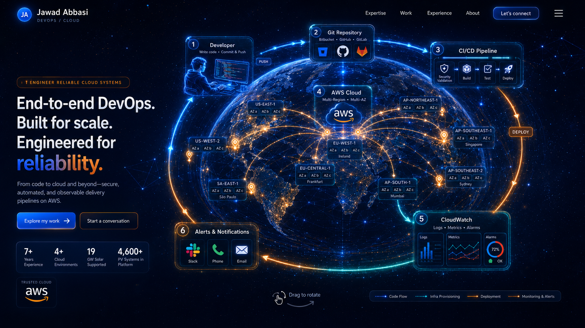

I engineer reliable cloud systems
Jawad Abbasi
End-to-end DevOps.
Built for scale.
Engineered for reliability.
From code to cloud and beyond—secure, automated, observable delivery pipelines on AWS for enterprise-scale cloud and IoT platforms.
experience
environments
supported
in platform
TRUSTED CLOUDaws

Loading DevOps command centerPreparing secure cloud lifecycle
Interactive mode unavailable
The premium static command center remains fully visible.
LIVE DEVOPS LIFECYCLEDeveloper is writing and pushing code
☝ Drag to rotate · Scroll to zoom
CORE EXPERTISE
Cloud systems designed to be secure, repeatable, and observable.
AWS architecture
Multi-environment infrastructure across compute, networking, databases, serverless, security, observability, and IoT services.
Infrastructure as Code
Terraform workflows that plan, validate, review, and provision version-controlled AWS architecture automatically.
DevSecOps delivery
Bitbucket Pipelines and Jenkins workflows with secure OIDC access, build automation, testing, security checks, and controlled releases.
Production operations
CloudWatch dashboards, alarms, incident response, Slack notifications, RCA, cost awareness, and reliability improvements.
SELECTED WORK
TerraSmart renewable-energy IoT platform.
USA · ENTERPRISE IOT · SOLAR
Operating cloud infrastructure for a large-scale solar technology platform.
Designed and managed AWS infrastructure supporting React applications, Node.js services, Elastic Beanstalk, Lambda telemetry processing, Aurora PostgreSQL, AWS IoT Core, and multi-environment delivery workflows.
Terraform IaCBitbucket CI/CDAWS IoTCloudWatchDevSecOpsProduction support
19 GWsolar supported
4,600+PV systems
4delivery environments
24/7operational focus
EXPERIENCE
Seven years of cloud automation and production engineering.
Senior DevOps Engineer
Zigron Technologies · Client: TerraSmart
AWS architecture, Terraform, CI/CD, cloud security, observability, AWS IoT, incident response, Linux automation, Docker, and production delivery.
DevOps Intern
Zigron Technologies
Linux administration, Docker, AWS infrastructure support, deployment automation, monitoring, and CI/CD foundations.
Network Administrator Intern
Pakistan Television Headquarters
LAN operations, network troubleshooting, device configuration, system administration, and infrastructure support.
ABOUT
Automation first. Security by design. Reliability as the outcome.
I build systems that make delivery safer and operations calmer: clear infrastructure code, automated pipelines, least-privilege access, useful observability, and fast alerting paths.
My work spans AWS, Terraform, Git, Bitbucket, Jenkins, Docker, Linux, Bash, Python, CloudWatch, Route 53, CloudFront, API Gateway, IAM, WAF, GuardDuty, Secrets Manager, Aurora PostgreSQL, AWS Lambda, and IoT Core.
LET’S BUILD RELIABLE SYSTEMS